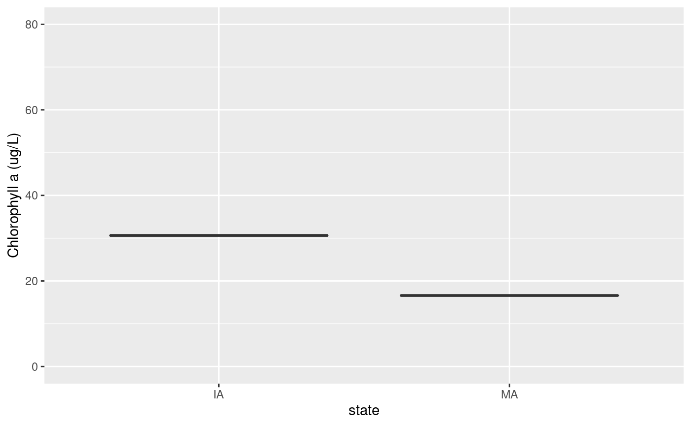

vignettes/working_with_lagosne.Rmd
working_with_lagosne.RmdThe following document demonstrates use of the LAGOSNE package with two analyses:
Before we can begin, we must load LAGOSNE data with lagosne_load:
library(LAGOSNE) dt <- lagosne_load()
The first analysis involves constructing a boxplot of average lake chlorophyll by state. To begin, we join the nutrient water quality table (epi.nutr) to the location information for each lake in the locus table. Next, we join the output to the state table to obtain state abbreviations that correspond to each lake. Finally, we filter the dataset to exclude any lakes that do not fall within a state.
library(dplyr) library(ggplot2) lg <- left_join(dt$epi_nutr, dt$locus) lg <- left_join(lg, dt$state) lg <- group_by(lg, state) lg <- filter(lg, !is.na(state))
Now, the state column is of character type so will be in alphabetical order by default. We need to cast this column as a factor and reorder its levels from East to West in preparation for plotting.
state_easting <- summarize(lg, mean_easting = mean(nhd_long, na.rm = TRUE)) state_easting <- arrange(state_easting, mean_easting) lg$state <- factor(lg$state, levels = state_easting$state)
Finally, we construct a boxplot with ggplot:
ggplot(lg) + geom_boxplot(aes(x = state, y = chla), outlier.shape = NA) + ylim(c(0, 80)) + ylab("Chlorophyll a (ug/L)")

The second analysis involves constructing a map of average lake chlorophyll concentration in Pennsylvania lakes. To begin, we use the maps and sf package to obtain a geographic outline of the state.
library(maps) library(sf) states <- st_as_sf(map("state", plot = FALSE, fill = TRUE)) pa <- filter(states, ID == "pennsylvania")
Next, we filter the output from the previous analysis to only include PA lakes and calculate mean chlorophyll for each lake:
pa_chl <- filter(lg, state == "PA") pa_chl <- group_by(pa_chl, lagoslakeid) pa_chl <- summarize(pa_chl, mean_chl = mean(chla, na.rm = TRUE), mean_long = mean(nhd_long, na.rm = TRUE), mean_lat = mean(nhd_lat, na.rm = TRUE)) pa_chl <- filter(pa_chl, !is.na(mean_chl))
Finally, we turn our data.frame into an sf geospatial object using st_as_sf before constructing a map with ggplot and geom_sf.